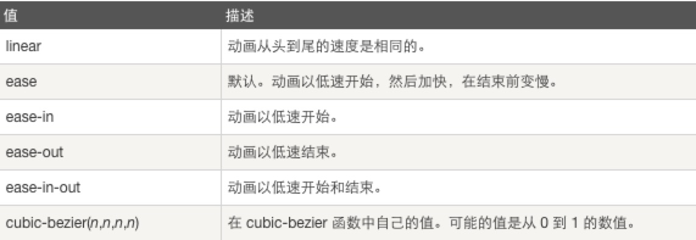

Your browser doesn't support the features required by impress.js, so you are presented with a simplified version of this presentation.
For the best experience please use the latest Chrome, Safari or Firefox browser.
CSS & SVG Animation
——— H.S.O 王璐
CSS 动画
通过 CSS3，我们能够创建动画，这可以在许多网页中取代动画图片、Flash 动画以及 JavaScript。
CSS3动画 —— @keyframes规则
定义和用法：
- 通过 @keyframes 规则，您能够创建动画。
- 创建动画的原理是，将一套 CSS 样式逐渐变化为另一套样式。
- 在动画过程中，您能够多次改变这套 CSS 样式。
- 以百分比来规定改变发生的时间，或者通过关键词 "from" 和 "to"，等价于 0% 和 100%。0%是动画的开始时间，100% 动画的结束时间。
- 注释：请使用动画属性来控制动画的外观，同时将动画与选择器绑定。
CSS3动画 —— @keyframes规则
语法
- animationname： 必需。定义动画的名称。
- keyframes-selector：必需。动画时长的百分比。合法的值：0-100% 或 from,to
- css-styles：必需。一个或多个合法的 CSS 样式属性
例子
CSS3动画 —— animation
animation属性是一个简写属性，用于设置六个动画属性：
语法：
animation: name duration timing-function delay iteration-count direction;
- animation-name：规定需要绑定到选择器的 keyframe 名称
-
animation-duration：规定完成动画所花费的时间，以秒或毫秒计
请始终规定，否则时长为 0，就不会播放动画了。
- animation-timing-function：规定动画的速度曲线。
- animation-delay：规定在动画开始之前的延迟
- animation-iteration-count：规定动画应该播放的次数 n|infinite
- animation-direction：规定是否应该轮流反向播放动画 normal|reverse|alternate|alternate-reverse|initial|inherit
CSS3动画 —— animation
animation-timing-function指定动画将如何完成一个周期。速度曲线定义动画从一套 CSS 样式变为另一套所用的时间。速度曲线用于使变化更为平滑。
语法：
animation-timing-function: value;

transform ———— CSS3 2D 转换
- translate(x, y):元素从其当前位置移动，根据给定的left(x坐标)和top(y坐标)移动。例子
- rotate():元素顺时针旋转给定的角度。允许负值，元素将逆时针旋转。例子
- scale(x-angle,y-angle):元素的尺寸会增加或减少，根据给定的宽度（X 轴）和高度（Y 轴）参数。例子
- skew(x-angle,y-angle):元素翻转给定的角度，根据给定的水平线（X 轴）和垂直线（Y 轴）参数。例子
transform ———— CSS3 3D 转换
- rotateX():元素围绕其 X 轴以给定的度数进行旋转。
- 通过 rotateY() 方法，元素围绕其 Y 轴以给定的度数进行旋转。
transform-origin
是变形原点，也就是该元素围绕着哪个点变形或旋转，该属性只有在设置了transform属性的时候起作用
语法：
transform-origin: x-axis y-axis z-axis;
- x-axis:left(0)|center(50%)|right(100%)|length|%
- y-axis:top|center|bottom|length|%
- z-axis:length
旋转原点例子
CSS3 Aminated例子
SVG
什么是SVG?
- SVG 指可伸缩矢量图形 (Scalable Vector Graphics)
- SVG 用来定义用于网络的基于矢量的图形
- SVG 使用 XML 格式定义图形
- SVG 图像在放大或改变尺寸的情况下其图形质量不会有所损失
- SVG 是万维网联盟的标准
SVG文件可通过以下标签嵌入HTML文档：标签embed、object 或者 iframe
SVG形状
SVG 有一些预定义的形状元素，可被开发者使用和操作：
- 矩形 标签rect
- 圆形 circle
- 椭圆 ellipse
- 线 line
- 折线 polyline
- 多边形 polygon
- 路径 path
SVG滤镜用来向形状和文本添加特殊的效果。必须在defs标签中定义 SVG 滤镜。
可用滤镜有:
feBlend,feColorMatrix,feComponentTransfer,
feComposite,feConvolveMatrix,feDiffuseLighting,
feDisplacementMap,feFlood,feGaussianBlur,feImage,
feMerge,feMorphology,feOffset,feSpecularLighting,
feTile,feTurbulence,feDistantLight,fePointLight,
feSpotLight
高斯模糊
filter标签用来定义 SVG 滤镜。filter标签使用必需的 id 属性来定义向图形应用哪个滤镜
filter标签必须嵌套在defs标签内。defs标签是 definitions 的缩写，它允许对诸如滤镜等特殊元素进行定义。
例子
SVG 渐变
和 放射性渐变
linearGradient标签可用来定义 SVG 的线性渐变。
例子
radialGradient标签用来定义放射性渐变。